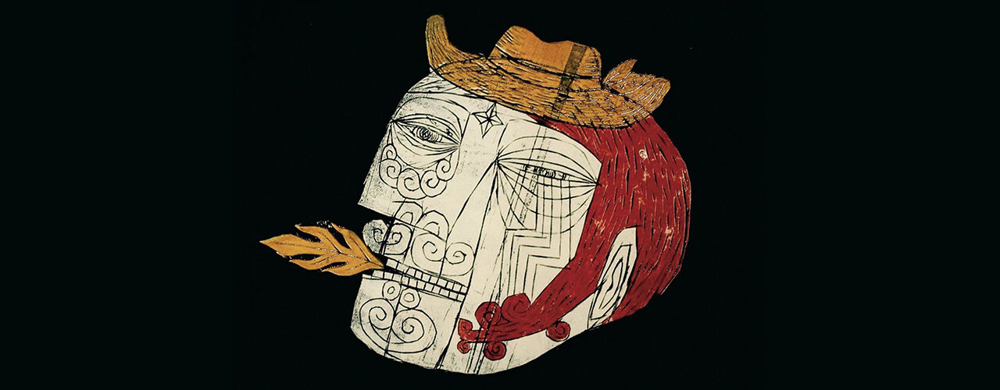
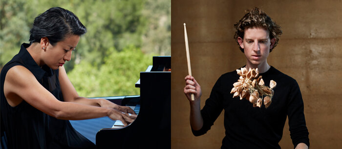
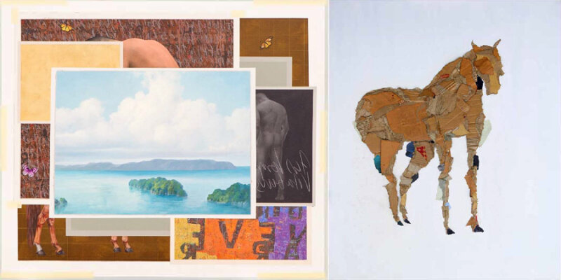
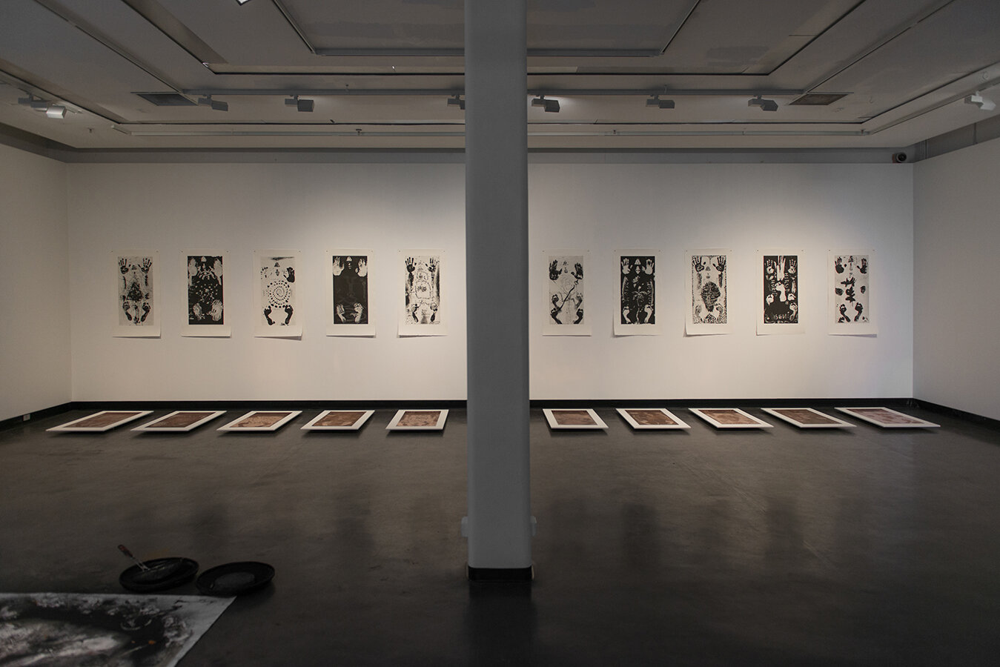

Image and work by Meliantha Muliawan.

One of our major projects for the year, #Perempuan (or woman in Indonesian) was an exhibition commissioned by Project Eleven featuring works by ten emerging Indonesian artists exploring current issues surrounding women’s existence, visibility, role and participation in Indonesia. The works were selected from 25 proposals received in response to an open call unlimited by gender. Participating artists: Arum Dayu, Erwin Windu Pranata, Meliantha Muliawan, Octora, Patricia Untario, Puri Fidhini & Etza Meisyara, Ruth Marbun, Tandia Bambang Permadi and Yaya Sung.
With the support of Multicultural Arts Victoria and the State Government of Victoria.
Link to Jakarta Post article on the exhibition.
Download e-catalogue.

The Takeover Commission with the Arts Centre Melbourne and Melbourne Fringe is into its 2nd year. For 2018, Takeover supported a hugely successful dance work called Colossus by Stephanie Lake, one of Australia's most inventive and celebrated choreographers. Supported by a cast of 50 young and emerging dance students from the Victorian College of the Arts, Colossus saw the stage flooded with bodies in a heaving, living, breathing, mass of bodies moving in complex unison and wild individuality.

Image by Keith Saunders.
Project Eleven is pleased to support the Futuremakers programme with Musica Viva. FutureMakers discovers and enables brilliant early career artists to become Australia’s musical leaders of tomorrow. The initiative’s two-year part-time program is centred on the development and creation of a music-centred performance project, supported by a professional development curriculum focussed on nurturing artistic leadership, developing entrepreneurial capabilities and shaping the sector’s future. The 2018-2019 artists are pianist Aura Go and percussive artist Matthias Schack-Arnott.

Artist in residency Eliza O'Donnell from Grimwade Institute, Melbourne University undertook conservation work at Ruang Dalam in Jogjakarta, Indonesia. The work shown in this video are Entang Wiharso's paintings, part of the collection of Yayasan Rumah Melanie. Thank you to Ibu and Pak Gusmen at Ruang Dalam who have hosted Eliza since March 2018.
Follow link to Eliza's article in the International Institute for Asian Studies newsletter, published in the Netherlands.

SITUATE / 3 February to 6 March 2018
Tisna Sanjaya is one of Indonesia’s leading contemporary artists. He uses painting, print and performance to consider environment, politics and religion from both a local and global perspective.